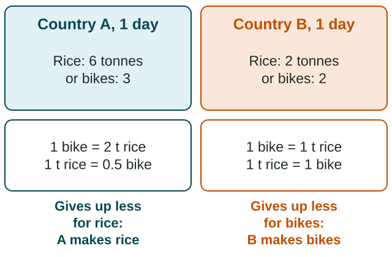

Trade and the World Economy
Trade happens where places complement each other.
Part 1 · Hook
Why this matters
Part 2 · Before you start
What this builds on
Part 3 · Prerequisite check
Quick check before you start
1. What is a supranational organization?
- A group of three or more countries that cooperate and give up some control
- A city that is the center of world finance
- A country split into smaller states
- A company that works in many countries
Show the answer
Supranational organizations, like trade blocs, ask members to share some sovereignty.
- Correct: A group of three or more countries that cooperate and give up some control:
- A city that is the center of world finance:
- A country split into smaller states:
- A company that works in many countries:
2. In world-system terms, what do periphery countries mostly export?
- Raw materials
- Research and patents
- Banking services
- Software
Show the answer
The periphery mostly exports raw materials and relies on low-wage work.
- Correct: Raw materials:
- Research and patents:
- Banking services:
- Software:
Part 4 · See it
See it first

Part 5 · Step by step
How it works, step by step
- Each country gives up some of one good to make another (opportunity cost)the country that gives up less has the comparative advantage in that good
- Each country specializes in its comparative advantage and tradesboth end up with more goods than they could make alone
- Countries form trade blocs such as the EU and Mercosurtariffs fall among members, so trade among them grows, and members share some sovereignty
- A government cannot pay its debts, as Mexico in 1982the IMF lends with structural adjustment, and crises spread through an interdependent world
Part 6 · Key ideas
Key ideas
- Complementarity: one place has what another needs, as Costa Rica's bananas and Canada's wheat.
- Absolute advantage: making more of a good. Comparative advantage: making it at a lower opportunity cost. Trade follows comparative advantage.
- Opportunity cost of one unit = what you give up divided by what you get, from the same day of work.
- Neoliberalism cuts the government's role: fewer tariffs (taxes on imports), sold state firms, less spending. The WTO sets trade rules; trade blocs cut tariffs among members.
- The IMF lends to governments in crisis, with conditions (structural adjustment). Debt and trade make the world interdependent.
Part 7 · Misconception
A common mistake
The wrong idea: A country that can make more of both goods should make both and not trade.
What actually happens: That country has the absolute advantage in both, but trade follows comparative advantage: each country makes the good it gives up the least to make, and both gain.
Part 8 · Check yourself
Check yourself
Exam-style questions. Anything you miss goes into your review queue.
Data
What one day of work can make in two countries
| Country | Coffee (bags) | Tablets |
|---|---|---|
| Country E | 12 | 6 |
| Country F | 4 | 4 |
Invented data for practice.
1. According to the table, which country has the absolute advantage in making tablets?
- Country F, because tablets cost it less coffee
- Country E, because it makes 6 tablets to F's 4
- Neither, because the two make the same number
- Both, because each can make tablets
Show the answer
Absolute advantage compares output: in one day E makes 6 tablets and F makes 4.
- Country F, because tablets cost it less coffee: That is the test for comparative advantage, not absolute advantage.
- Correct: Country E, because it makes 6 tablets to F's 4: Right: absolute advantage means making more with the same work: 6 against 4.
- Neither, because the two make the same number: E makes 6 tablets a day and F makes 4, so they differ.
- Both, because each can make tablets: Absolute advantage goes to the country that makes more, here E.
2. In Country E, what is the opportunity cost of making one tablet, in bags of coffee?
Type a number. No calculator needed: work it out by hand, as on the exam.
Show the answer
In one day E can make 12 bags of coffee or 6 tablets, so one tablet costs bags of coffee.
- Answer: 2
3. Which country has the comparative advantage in making tablets?
- Country E, because it makes more tablets
- Neither, because E is better at both goods
- Country F: a tablet costs it 1 bag, not 2
- Both, because each country makes some tablets
Show the answer
A tablet costs E 2 bags of coffee () and F 1 bag (). The lower opportunity cost is F's, so F has the comparative advantage in tablets and E in coffee.
- Country E, because it makes more tablets: That is absolute advantage. Compare opportunity costs: a tablet costs E 2 bags of coffee but costs F 1 bag.
- Neither, because E is better at both goods: Being better at both gives E absolute advantage in both, but each country still has a comparative advantage in one good.
- Correct: Country F: a tablet costs it 1 bag, not 2: Right: F gives up less coffee for each tablet, so F has the comparative advantage in tablets.
- Both, because each country makes some tablets: Only one country can have the lower opportunity cost of a good.
4. If each country specializes by comparative advantage and they trade, what is the likely outcome?
- E makes coffee, F tablets; both gain
- E makes both goods, and F stops producing
- F makes coffee, E makes tablets, and both gain
- Neither gains
Show the answer
E has the comparative advantage in coffee (a bag costs it half a tablet) and F in tablets (a tablet costs it 1 bag), so specializing and trading leaves both better off.
- Correct: E makes coffee, F tablets; both gain: Right: specializing in the good with the lower opportunity cost and trading lets both consume more.
- E makes both goods, and F stops producing: That follows absolute advantage, and it ignores the gain from F's lower cost for tablets.
- F makes coffee, E makes tablets, and both gain: This swaps the advantages: E gives up less to make coffee, F gives up less to make tablets.
- Neither gains: Gains come from differences in opportunity cost, which exist here.
5. In the 1980s, many Latin American governments sold state-owned companies, cut spending and lowered tariffs. Which idea do these policies reflect?
- Dependency theory
- Complementarity
- Neoliberalism
- Commodity dependence
Show the answer
Selling state firms, cutting spending and opening trade are neoliberal policies, which spread after the 1982 debt crisis.
- Dependency theory: Dependency theory would favor less reliance on trade with the core, not lower tariffs.
- Complementarity: Complementarity explains why two places trade; it is not a set of government policies.
- Correct: Neoliberalism: Right: shrinking the government's role, selling state firms and freeing trade are neoliberal policies.
- Commodity dependence: That describes relying on one export, not a set of policies.
6. Build an explanation of which good Country F (in the coffee and tablets table) should make, using the right kind of advantage.
Build the answer part by part, then write it in your own words.
Show the answer
Comparative advantage goes to the lower opportunity cost: F gives up 1 bag of coffee per tablet, E gives up 2.
- An answer that earns the point: Country F has the comparative advantage in tablets because a tablet costs it only 1 bag of coffee while it costs Country E 2 bags, so it should make them and trade.
Part 9 · Summary
Summary
Part 10 · Up next
What comes next
Part 11 · Connections